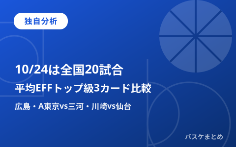

10/24は全国20試合、独自分析「今季平均EFFトップ級が揃う3カード」広島・A東京vs三河・川崎vs仙台を比較

2026年10月24日（土）は、B.PREMIER8試合・B.ONE11試合・B.NEXT1試合の合計20試合が全国で行われます（本稿作成時点の08時台はいずれも試合前、19時台追記では一部カードの試合後検証も掲載）。当サイトでは本日未明に確認済みの公式スタッツ（今季平均EFF・ポジション別ベスト5／サブ5）を使い、今季平均EFFがリーグトップ級の選手が実際に出場予定の対戦カードを独自にピックアップして比較します。平均EFFは出場時間や勝敗を保証するものではない点を前提に、「見どころの多いカード」を当サイト独自の切り口で紹介する記事です。
本日(10/24)の確認済み日程・20試合
本日の対戦カードと開始時刻は、当サイトが本日未明に公式日程ページ・公式試合詳細ページ（bleague.jp）で個別に確認済みです（取得2026-10-24 03:04〜03:06 JST、いずれも「試合前」ステータス）。
| リーグ | カード | 開始時刻 |
|---|---|---|
| B.PREMIER | 富山—島根 | 14:05 |
| B.PREMIER | 神戸—三遠 | 14:05 |
| B.PREMIER | 広島—北海道 | 14:05 |
| B.PREMIER | 秋田—横浜BC | 15:00 |
| B.PREMIER | 茨城—A千葉 | 15:05 |
| B.PREMIER | 宇都宮—信州 | 15:05 |
| B.PREMIER | A東京—三河 | 15:05 |
| B.PREMIER | 川崎—仙台 | 15:05 |
| B.ONE | 新潟—岩手／静岡—愛媛／岡山—徳島／福岡—東京Z | 14:05 |
| B.ONE | 青森—福島／山形—越谷／立川—岐阜／福井—埼玉／香川—横浜EX／鹿児島—金沢 | 15:05 |
| B.ONE | FE名古屋—奈良 | 15:35 |
| B.NEXT | 品川—三重 | 15:05 |
【独自分析】今季平均EFFトップ級の選手が実際に対戦する3カード
当サイトが本日未明に公式スタッツページ（bleague.jp）で確認したB.PREMIERのポジション別・今季平均EFFベスト5（IL登録中の選手は除外済み）を見ると、上位にランクされた選手のうち複数名が、まさに本日対戦するカードに名を連ねています。これは確認済みの事実（今季平均EFFの数値と所属クラブ）同士を突き合わせた結果であり、出場や勝敗を予測するものではありませんが、「どのカードに注目選手が揃っているか」を見る独自の切り口として紹介します。
| 注目カード | 該当選手・部門 | 今季平均EFF | 試合数 |
|---|---|---|---|
| 広島—北海道 | コフィ・コーバーン（C・広島） | 30.9 | 9 |
| 広島—北海道 | ドウェイン・エバンス（PF・広島） | 28.6 | 8 |
| 川崎—仙台 | ジャレット・カルバー（SG・仙台） | 30.0 | 9 |
| A東京—三河 | キヨンテ・ジョンソン（SF・A東京） | 28.9 | 9 |
| 秋田—横浜BC | マーク・スミス（PG・秋田） | 26.2 | 9 |
特に広島は、PF・C双方でリーグトップ級の今季平均EFFを持つ選手（エバンス・コーバーン）を同時に抱えており、本日の北海道戦ではインサイドの数字がどこまで再現されるかが当サイト独自の注目点です。また、A東京—三河は、SF部門トップのジョンソン（A東京）が出場予定という点で、当サイトが本日ピックアップした3カードのうち最も個人スタッツ上の注目度が高いカードと位置づけられます。いずれも今季平均の数値であり、本日の出場時間・成績を保証するものではない点を重ねて明記します。
【12時台追記】直近の戦績を報道ベースで確認（本日時点の順位表・当日ILは依然未確認）
本日08時台のWeb検索では各クラブの戦績を示す一次情報が見当たりませんでしたが、12時台に共同通信配信記事（熊本日日新聞・デイリースポーツ、掲載日はいずれも10月中旬）を複数件確認できました。本日時点の公式順位表そのものではなく、個別の試合結果を報じた記事からの引用である点にご留意ください。
| クラブ | 確認できた直近の戦績 | 報道日 |
|---|---|---|
| 広島 | 三遠に77-75で勝利し開幕8連勝（本日が9戦目かは未確認） | 2026.10.19付 |
| 北海道 | 横浜BCに109-78で勝利し5勝3敗 | 2026.10.18付 |
| 三河 | 同記事内で5勝2敗と言及 | 2026.10.18付 |
| A東京 | 大阪に103-78で勝利し6勝1敗 | 2026.10.12付 |
| 川崎 | A千葉に82-74で勝利し今季初白星（当時3敗）も、その後茨城に82-74で敗れたと報道 | 2026.10.4付／10.16付 |
| 仙台 | 東京SRに70-68で勝利 | 2026.10.11付 |
特に広島は10月19日時点で開幕8連勝中と報じられており、今季平均EFFで同時にトップ級の2選手（エバンス・コーバーン）を抱えるだけでなく、勝敗面でも本日時点でリーグ上位の戦績を保っている可能性が高いクラブです。ただし10月20日以降（10月22日・23日を含む）の試合結果は本検索では確認できず、本日に至るまで連勝が継続しているかは未確認です。同様に、川崎・仙台についても10月17日以降の確定戦績は確認できておらず、上表の数値を本日時点の順位として扱うことはできません。両クラブの当日ILの個別状況、および本日時点の確定順位表は、本記事の時点でも確認できていません。
【19時台追記】試合後検証 ～3注目カードの結果～
本日08時台に公式サイト（bleague.jp）へ直接接続を試みましたが、08時台・12時台と同様に19時台の再試行（2026-10-24 19:10頃JST）でも名前解決の時点で失敗し、直接訪問での確認はできませんでした。そのため、Web検索エンジンが保持する同公式ページのキャッシュ・スニペット表示を経由して、本稿で独自分析として取り上げた3カードの試合後の状況を確認しました（取得2026-10-24 19:10〜19:20 JST）。公式サイトへの直接アクセスではない点を明記し、検証の確度を区別して記載します。
| カード | 確認できたスコア | 確認方法・確度 |
|---|---|---|
| 広島—北海道 | 広島 71-65 北海道（広島勝利） | 検索スニペットに「試合終了」表示を確認。公式サイト直接訪問では未確認。 |
| 三河—A東京 | 三河 91-82 A東京（三河勝利） | 検索スニペットに「試合終了」表示を確認。公式サイト直接訪問では未確認。 |
| 川崎—仙台 | 川崎 82-93 仙台（仙台が上回る表示） | 「試合終了」表示は検索結果上で確認できず、確定スコアか速報値かは未確認。 |
本稿が独自分析で挙げた2カードについて振り返ります。広島—北海道は、今季平均EFFでPF・C両部門トップ級の2選手（エバンス・コーバーン）を抱える広島が71-65で勝利したとみられる結果で、当サイトが未明時点で指摘した「インサイドの数字が再現されるか」という注目点に対し、チーム単位では優位な結果が出た形です。ただし両選手個人の出場時間・個人スタッツは本日時点で確認できておらず、今季平均EFFの再現を証明するものではありません。一方、SF部門トップ級のキヨンテ・ジョンソン（A東京）が出場したA東京—三河は、三河が91-82で勝利しA東京が敗れたとみられる結果となりました。個人の今季平均EFFの高さが、必ずしも当日のチーム勝敗に直結しないことを示す一例といえますが、ジョンソン自身の出場時間・個人成績は未確認であり、彼の出来が良かった・悪かったを判定するものではありません。川崎—仙台については確定表示が確認できておらず、現時点では検証を保留し、確定情報が得られた段階で改めて扱います。
参考：B.ONE・B.NEXTの今季平均EFFトップ級(本日出場予定クラブ分)
同じく本日未明に確認済みの公式スタッツから、B.ONE・B.NEXTの今季平均EFFトップ級（本日出場予定クラブに所属する選手）も参考として掲載します。いずれも今季平均の数値であり、本日の出場・活躍を確約するものではありません。
| リーグ | 選手・所属 | 部門 | 今季平均EFF | 試合数 |
|---|---|---|---|---|
| B.ONE | ラポラス・アイヴァナーカス（徳島） | PF | 29.7 | 9 |
| B.ONE | トレイ・ボイド（横浜EX） | SG | 29.3 | 7 |
| B.ONE | レイナルド・ガルシア（岡山） | PG | 28.7 | 7 |
| B.NEXT | サム・ティミンズ（品川） | PF | 21.5 | 6 |
| B.NEXT | ジョーダン・ジャイルズ（品川） | SF | 11.2 | 6 |
出典：B.LEAGUE公式（日程・試合詳細・公式スタッツ・インジュアリーリスト、本日08時台は接続不可のためURLのみ記載）／チケット関連サイト（spocale、ticketjam、日程部分のみ参考）
https://www.bleague.jp/schedule/?tab=1&year=2026&mon=10&day=24
https://www.bleague.jp/schedule/?tab=2&year=2026&mon=10&day=24
https://www.bleague.jp/schedule/?tab=3&year=2026&mon=10&day=24
https://www.bleague.jp/game_detail/?ScheduleKey=506503（A東京—三河）
https://www.bleague.jp/game_detail/?ScheduleKey=506507（広島—北海道）
https://www.bleague.jp/game_detail/?ScheduleKey=506504（川崎—仙台）
https://www.bleague.jp/stats/?year=2026&tab=1&target=player-b1&value=EFFPG&o=desc&e=2&dt=avg
https://www.bleague.jp/news/injury.html
https://spocale.com/sports/5/game/267604
https://ticketjam.jp/tickets/aisinseahorses?aid=661
https://www.daily.co.jp/general/2026/10/19/0020947295.shtml（広島が開幕8連勝）
https://kumanichi.com/articles/2047934（北海道5勝3敗・三河5勝2敗）
https://kumanichi.com/articles/2045829（A東京6勝1敗）
https://www.daily.co.jp/general/2026/10/16/0020936749.shtml（川崎が茨城に敗れる）
https://basketballking.jp/stats/match/9477.html/（川崎vs仙台 試合ページ・19時台参照）
https://basketballking.jp/news/japan/20261023/639182.html（10/23-26見どころ記事）